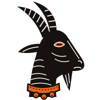

Explainable agents for decisions that matter
Vertep
Statecharts as durable actors. Every step written down before it happens, so any decision replays and explains itself.

Explainable agents for decisions that matter
Statecharts as durable actors. Every step written down before it happens, so any decision replays and explains itself.
